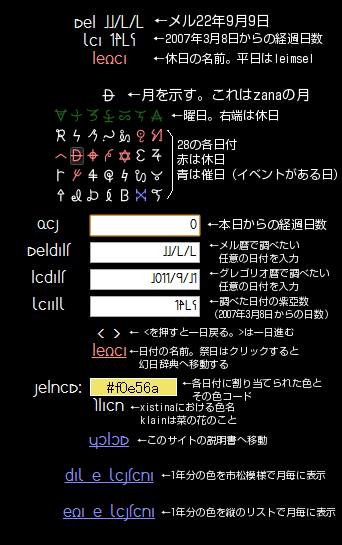

|
カレンダー
●概説
カレンダーを使うと――
1:今日のメル暦の日付や紫亞数が分かる
2:テキストボックスにグレゴリオ暦やメル暦で任意の日付を入れれば相互変換できる。メル暦の欄はridiaやdiaのように文字で書いてもよい
3:祭日か平日か分かる。祭日の場合、祭日名をクリックすると幻日辞典の記述が読める
4:今日ないし指定した日の色が分かる。色コードと色名も付く。詳しくはxistinaを参照すること
5:xistinaを市松模様や縦のリストで観覧することができる
created by nias avelantis
●使用法

|